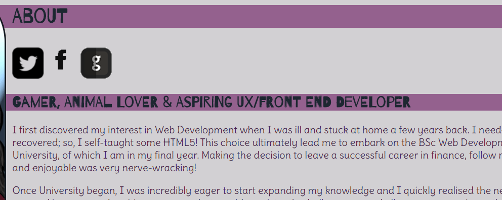
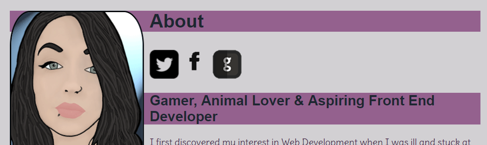
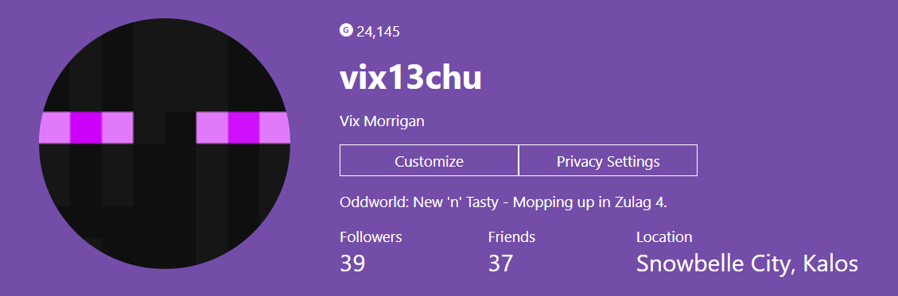

♠Portfolio Changes (Current & Proposed)♠
Feedback Received
In terms of content, my original portfolio succeeded quite well. However, in terms of accessibility and usability there were some issues. The main one was that I included my entire blog one on page, making it extremely long winded and hard to distinguish which blog began and finished where (short of being prudent with the heading indicators).
Another issue was the original font I used for my headings (Barrio) wasn’t too accessible. Some characters were augmented strangely and displayed as quite congested on smaller devices; it was especially tricky for users with impairments to their vision or those who have visual difficulties.

I changed the heading font to a clear, sans-serif font ‘Abel’, and it displays clearly on all devices; with no congested characters or inconsistency. It is crisp and clear and compliments ‘Darius’ which is used for the content.

The blog pages have been reworked, to include links to each Blog post and their title, in reverse chronological order, meaning the first is at the bottom; this is because most users want to see the most recent news and information first, and will delve further if they so wish to.
The colour contrasting was fine (as seen below), so I’ve kept the colour scheme as it is for now.
Proposed Changes
When the initial changes were made to my portfolio, I was still working on my two self-initiated projects (CSS Grid Layout & CSS Animation) and learning how to understand and apply SCSS and better CSS techniques. Now they are complete, I have a world of ideas on how to make my portfolio site much better sparked by the new skills I have learnt.
I intend to restructure the whole website using CSS Grid layout, focusing firstly on my project and blog pages. I also want to incorporate the CSS Animation I have learnt onto the website to add more personality and character – such as on the social media icons. I also intend to create a better logo, as for now I have just optimised the current banner image so it does not display blurred as it did previously.
Through completing my final year project (Pilgrim Tiles), I have learned how to make an animated hamburger menu with CSS and paired with my recent learned skills in SCSS and CSS Grid, this means I want to change the Navigation layout of my portfolio site completely. As I have learnt a lot more about the CSS language from resources like CSS-tricks and lecture materials, I am going to completely break down and change the website styling. I also wish to link to more of my personal life to my portfolio; like my hobbies and interests (i.e. writing, video game streaming, my personal blog).

However, if I’m honest – I’m a little shy when it comes to sharing my writing, so I’m going to have to invest some serious time after I graduate University into making that happen. I want those who visit my portfolio to see who I am in terms of skills and abilities, but also who I am as an individual too (I am a lot more than a big fan of purple – I promise!).
View my old Portfolio website - here.
References
WebAIM: Color Contrast Checker Webaim.org. (2018). WebAIM: Color Contrast Checker. [online] Available at: https://webaim.org/resources/contrastchecker/ [Accessed 7 Mar. 2018].
CSS-Tricks. (2018). CSS-Tricks. [online] Available at: https://css-tricks.com/ [Accessed 1 Mar. 2018].